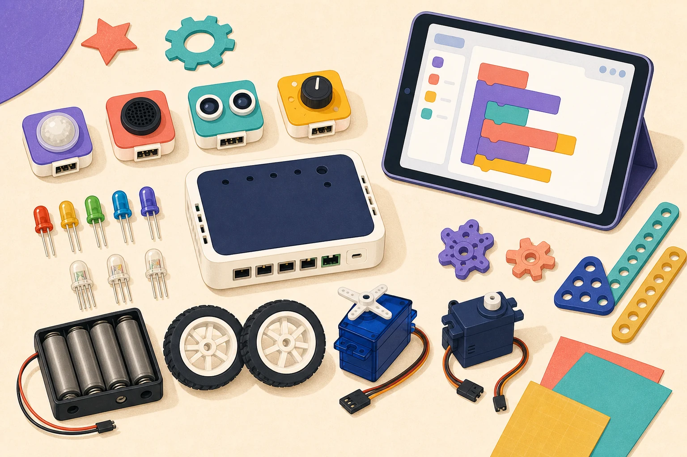

INPUT
A Hummingbird sensor notices something: a person approaches, the room gets dark, someone claps, or a button is pressed.
Creative Robotics · Teams of Two
With one partner, use a BirdBrain Hummingbird Premium Kit and the BirdBlox iPad app to create an interactive invention for a future person or community.

After the kits arrive, mentors will prepare each Hummingbird Bit micro:bit with BirdBrain’s Bluetooth firmware using a Windows laptop. Teams will then connect and program wirelessly from their iPads in the BirdBlox app.
Name the future user, audience, community, problem, need, or opportunity.
Choose a sensor or control that starts or changes the interaction.
Use lights, movement, sound, or another response people can notice.
Build a form that supports the idea and keeps components accessible.
Connect input, decision, and outputs so the project responds.
Record what happened, improve the design, and prepare for a public demonstration.
IF a visitor approaches, THEN the flower opens AND the LEDs turn on.
Brainstorm faster
Every starter uses parts found in your Hummingbird Premium Kit and meets the input-plus-two-outputs structure.
Your team has exactly two students. You submit one shared technical proposal, but each partner completes a short individual reflection.